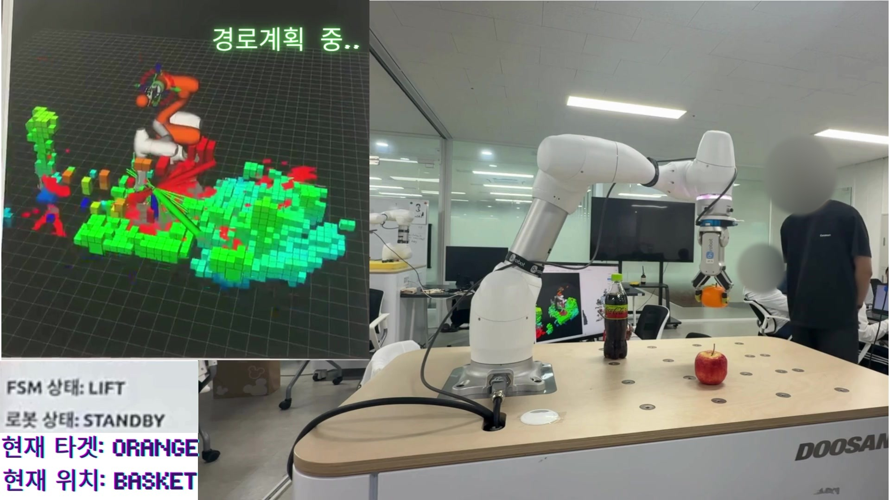
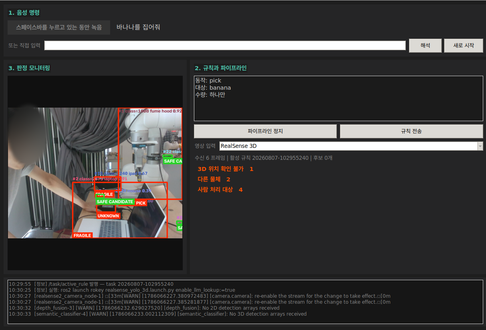
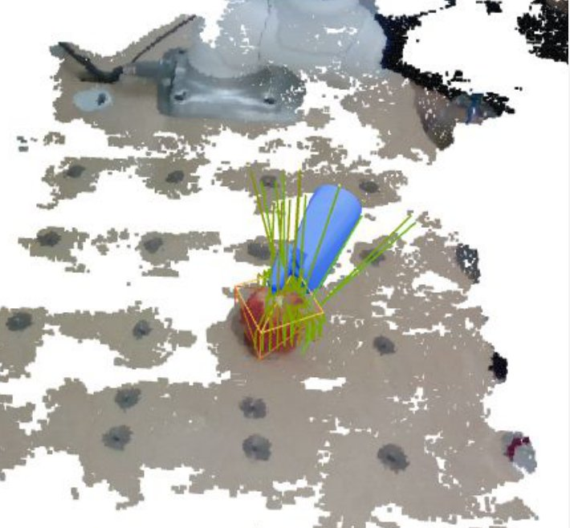
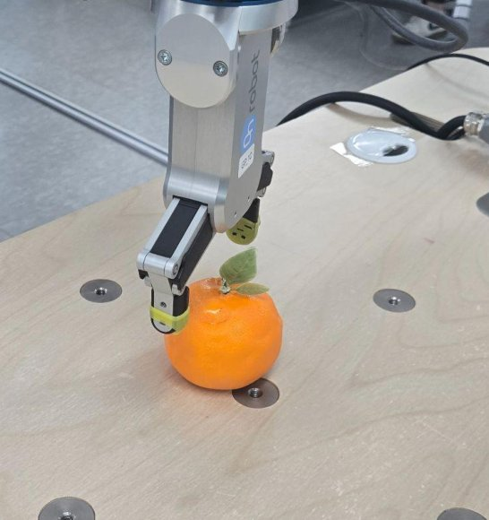
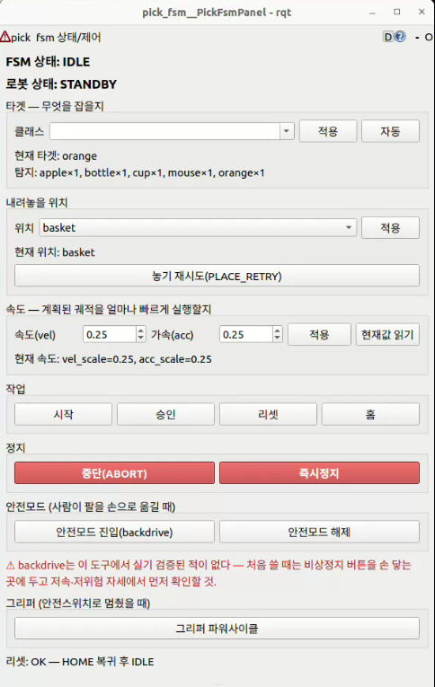

한눈에 보기
- "사과 바구니에 담아줘" 같은 자연어 지시를 LLM(대규모 언어 모델)이 해석하고 협동로봇이 물체의 위치와 형상을 인식해 장애물을 피해 집어 옮기는 것이 목표였습니다.
- 5인 팀에서 저는 GPU 한 대의 메모리를 나눠 쓰도록 조정하고, 파지(물체 집기) 모델과 다른 실물 그리퍼(로봇 손)를 실측해 맞췄습니다.
- 부트캠프의 마지막 프로젝트로, ERP42 자율주행과 부트캠프 ROS2 프로젝트 3개를 거쳐 판단·인식·모션·안전을 한 시스템으로 묶었습니다.
1분 시연 영상
진행 과정
과제는 "AI(Computer Vision) 기반 협동 로봇 작업 어시스턴트 구현"이었습니다. 팀은 이전 협동로봇 프로젝트에서 교시좌표(로봇이 이동할 위치로 미리 지정해 둔 좌표)를 일일이 지정해야 했던 경험에서 출발했습니다.
그래서 구현할 기능(LLM 지시 해석·GPU 경로계획)을 먼저 고르고 역할을 나눈 뒤, 이 기능들을 엮을 시나리오로 사람과 협업하는 마트 계산대를 정했습니다.
이 목표에는 두 가지 제약이 있었습니다.
- GPU 한 대(8GB): 3차원 장애물 지도(nvblox)·GPU 경로계획(cuMotion)·물체 영역 분할(YOLO-seg)·파지 후보 생성(GraspGenX)이 노트북 GPU 하나를 나눠 써야 했습니다.
- 모델과 다른 실물 그리퍼: 현장의 RG2 그리퍼는 로봇 팔과의 사이에 브라켓(22mm)이 끼어 있었고, 손끝 길이도 다물었을 때 파지 모델보다 38mm 길었습니다. 힌지 구조라 그리퍼를 벌릴수록 손끝까지의 길이가 짧아졌습니다.
저는 GPU 메모리를 아끼려고 GraspGenX의 파지 후보 수를 기본 200개에서 64개로 줄여 시작했습니다.
그리퍼 차이는 GraspGenX 모델을 그대로 두고, 실측값과 벌림 폭별 손끝 길이 보정표를 로봇 모델 파일(URDF)과 그리퍼 코드에 넣어 맞췄습니다.
이 보정은 충돌 검사용 그리퍼 모양과 RViz(로봇 상태 시각화 도구) 표시에 반영했고, 파지 성공률에 준 효과는 미검증입니다.
08-11에 판단(VLA)·작업 제어(FSM)·인식 세 패키지가 실제 카메라 장면에서 이어지는 것을 확인했습니다. OMPL(경로계획 라이브러리) 경로로 움직이는 중 사람이 작업영역에 손을 넣으면 멈추고 새 경로로 다시 계획하는 동작도 실기로 확인했습니다.
물체를 집어 목적지에 놓기까지 전체 과정(pick-to-place)의 실물 검증은 남은 과제입니다.
팀에서 일한 방식
팀은 전공을 기준으로 판단·인식을 맡는 VLM(영상과 언어를 함께 다루는 모델) 파트 3명과 로봇 구동을 맡는 M0609 파트 2명으로 나눴습니다.
저는 M0609 파트에서 pick 상태머신(FSM, 작업을 단계별 상태로 나눠 순서를 제어하는 구조)과 인식·파지 연결, 안전 노드(독립적으로 도는 프로그램 단위) 통합을 맡았습니다(공동작업).
두 파트의 시스템을 합치는 단계에서 양쪽 모두 로봇 팔에 명령을 보낼 수 있는 구조를 확인했습니다. 팀과 협의해 판단 계층의 팔 제어부를 걷어 내고, FSM만 팔을 움직이도록 정했습니다.
본인 담당:
- 판단 계층(VLA)·안전 계층(FSM) 통합
- 파지 모델(GraspGenX)과 실물 그리퍼(RG2)의 차이 실측·보정
- GPU 메모리 대응(파지 후보 수 조정, 중복 실행되던 물체 인식(YOLO) 노드 정리)
- 구동 중 정지 후 재계획 연결
- 장애물 지도 서비스가 없으면 이동을 막는 점검 게이트(팀 모션 코드 위에 제안·구현, 최종 작업 흐름에 연결하지 않은 실험 코드)
- 실기 설정값의 정본을 설정 파일(yaml)에 두고 실행 옵션(launch 인자)과 분리
배운 점
처음 다루는 도구는 다음과 같이 익혔습니다.
- MoveIt(로봇 팔의 이동 경로를 계획하는 프레임워크)·GraspGenX(물체를 집을 자세를 생성하는 딥러닝 모델) 등은 공식 문서와 데모 예제로 익혔습니다.
- GraspGenX와 GPU 경로계획·장애물 지도 라이브러리는 실제로 쓰는 버전의 소스 코드까지 읽었습니다.
- 장비 기본 사용은 부트캠프 공통 교육으로 익혔습니다.
장애물 인식이 멈춰도 경로 계획이 성공해 버리는 문제를 재현하며, "동작이 성공하는 것"과 "예외 상황에서 안전하게 멈추는 것"은 서로 다른 계층에서 따로 설계하고 검증해야 한다는 것을 확인했습니다.
기술 상세
진행 흐름·막힌 지점·결과·계층 구조·시스템 구성 펼쳐 보기
진행 흐름
- 07-30~31 — 구현할 기능을 고르고, 전공에 맞춰 판단·인식(VLM) 파트와 로봇 구동(M0609) 파트로 역할을 나눈 뒤 마트 계산대 시나리오를 확정했습니다.
- 08-01~02 — 개발 환경을 구축하고 로봇 구동·MoveIt 연동과 음성 인식 초기 이식을 진행했습니다.
- 08-02~04 — 미리 정한 파지 자세 대신 GraspGenX로 집을 자세를 만드는 방식으로 바꿨고(본인 건의), GPU 없는 노트북에서 3차원 충돌회피 기준선을 확인했습니다.
- 08-04~08 — 팀 공유 GPU 노트북에서 장애물 지도·GPU 경로계획을 시험하고, pick FSM과 GraspGenX 연결을 파트별로 나눠 개발했습니다. 중반에 컨베이어 벨트로 계산대를 모사하려던 계획을 빼 고정 작업대로 범위를 좁혔고, 08-08에 VLA 통합 범위를 확정했습니다.
- 08-09~11 — 판단 계층의 명령을 FSM이 받는 요청으로 바꿔 전달하는 프로그램(노드)과 인식↔FSM 연결을 만들고, 놓기·통합 테스트를 거쳐 08-11에 VLA·FSM·인식 세 패키지가 실카메라 장면에서 이어지는 것을 확인했습니다.
- 08-12 — 발표.
막힌 지점과 판단
① GPU 메모리 부족
- 후보 수 조정: GPU 메모리를 장애물 지도·경로계획 모듈과 함께 써야 해서, GraspGenX의 파지 후보 수를 기본 200개에서 64개로 줄여 시작했습니다.
- 노드 누적: 다시 실행할 때마다 컨테이너 안에 물체 인식(YOLO) 노드가 쌓여 10개까지 늘고(GPU 메모리 2.6GB 차지, 보조 메모리 소진) 마스크가 뒤섞였습니다. 실행 래퍼와 중복 실행 방지 락(lock)을 만들어 1개로 정리했습니다(래퍼 상태에서 Ctrl-C 종료 전달은 미검증).
- 병목 확인: 실측해 보니 YOLO는 상주 120MB·추론 6.7ms로 병목이 아니었습니다. 실제 병목은 GraspGenX였습니다.
- 파지 실패를 재현하는 중에는 이미 떠 있는 GraspGenX 워커와 중복 로드되어 GPU 메모리 부족(CUDA OOM)이 나는 것도 원인까지 확인했습니다.
② GraspGenX를 실물 RG2에 맞추기
- GraspGenX는 유지, URDF·그리퍼 코드에서 보정: GraspGenX 모델은 그대로 두고 로봇 모델 파일(URDF)과 그리퍼 코드에서 차이를 흡수했습니다. 실측 오프셋을 반영하고, 벌림 폭에 따른 손끝 길이를 추정하는 보정표를 만들어 충돌 모델 배치와 RViz(로봇 상태 시각화 도구) 표시에 썼습니다. 로봇이 도달할 목표 자세(IK 목표) 자체는 바꾸지 않았습니다.
- 90° 눕는 문제: 파지 자세를 손목 끝(
tool0) 기준으로 잘못 해석해 그리퍼가 90° 눕는 문제가 있었습니다. 두 URDF를 회전행렬로 비교해 기준을 그리퍼 몸체(rg2_base_link)로 확정했습니다. - 폭·힘 규약: 닫힘 폭에 여유를 더해 물체에 닿기 전에 멈추던 부호 오류를 고쳤습니다. 드라이버 폭 단위(1/10mm)와 사과를 으깨던 기본 파지력(40N)은 규약으로 정리했습니다.
③ VLA 노드와 기존 FSM 통합
- 제어부 일원화: 팀과 협의해 VLA의 로봇 제어부를 걷어 냈습니다. VLA는 "어떤 물체를 어디로"만 넘기고 좌표·파지 계산과 이동은 FSM이 전담합니다.
- 카메라 정리: 카메라를 2대에서 거치형 1대 공유로 정리했습니다. 빠진 손목 카메라 재파지 기능은 빈 서비스 인터페이스(
AcquireTarget.srv)로 복원 지점만 남겼습니다.
④ 인지 실패 감지 — 장애물 지도 반영 점검 (본인 제안·구현)
장애물 인식이 멈춰도 경로 계획은 "장애물이 없는 세상" 기준으로 성공해 버리는 문제가 있었습니다. 저는 원인 후보를 서비스 미기동·설정 오류·반영 지연 세 가지로 나누고 로봇을 움직이지 않고 계획만 실행해 재현했습니다. 그다음 팀 모션 코드 위에, 장애물 지도 서비스가 없으면 이동을 거부하는 게이트와 계획에 반영된 장애물 복셀(3차원 지도 칸) 수 기록을 제안·구현했고 설정 오류는 사전 점검 모드로 잡게 했습니다. 이 코드는 최종 pick FSM 경로에 연결하지 않은 실험 코드입니다.
⑤ 모션플래닝 실험 (팀)
cuMotion(GPU로 경로를 계산하는 모션플래닝 라이브러리) 경로가 실행 중 장애물을 밀고 가는 것을 실기에서 확인했고 "계획할 때만 장애물을 읽는다"는 가설을 세웠습니다. 실행 중에도 장애물에 반응하는 RMPflow를 검토했지만 설치된 cuRobo에는 없어 MPC(앞으로의 움직임을 예측해 제어값을 정하는 방식)를 ROS로 감싸는 방법을 따로 검토했습니다. 3Hz 재계획 루프는 팀원이 임의로 해 본 테스트이고 설계·실험 단계에서 끝났습니다.
결과와 검증 한계
- YOLO 노드 누적을 10개에서 1개로 줄인 것을 실사용에서 확인했습니다.
- 실제 카메라로 찍은 6~9개 물체 장면에서 VLA가 지정한 물체가 GraspGenX 파지 후보까지 이어지는 것을 확인했습니다.
- OMPL(경로계획 라이브러리) 경로를 따라 움직이는 중 사람이 작업영역에 손을 넣으면 멈추고 새 경로로 다시 계획하는 동작과, 출발 전 장애물 우회를 실기로 확인했습니다.
- 테스트(pytest — FSM·음성 79건, VLA 판단 246건 통과)는 제출 당시 README에 남은 기록이고 다시 실행하지 않았습니다. 로봇·카메라·API 키 없이 규칙과 JSON 처리 로직을 검사하는 테스트이며 실기 성능 검증은 하지 않았습니다.
- 남은 과제: GPU 전 모듈 동시 구동 여유, RG2 보정이 파지 성공률에 준 효과, cuMotion 실행 중 회피, 전체 pick-to-place 실물 검증.
계층 구조
팀 시스템은 판단(LLM)과 실행·안전(FSM)을 서로 다른 노드와 패키지로 나눈 구조이고 두 계층은 명령·결과·상태를 JSON 채널로만 주고받습니다. 모션 취소, 그리퍼 개폐, 물체 보유 상태, 충돌 씬 관리는 FSM 쪽에만 있습니다. 그래서 언어 모델의 응답이 늦거나 틀려도 정지와 그리퍼 판단은 FSM 규칙을 따릅니다.
정지는 언어 모델을 거치지 않습니다. 화면의 정지 버튼은 음성 인식·언어 모델을 기다리지 않고 bridge(두 계층 사이 명령을 중계하는 노드)로 바로 보냅니다. 음성으로 말한 "멈춰"는 음성 인식으로 글자가 된 뒤 언어 모델 없이 정지 명령이 되어 FSM을 일시정지(PAUSED) 상태로 전환합니다.
사람작업 지시·정지 개입판단 계층 (LLM)
vla_gui음성 입력·상태 화면agent_nodeTier 1 규칙 / Tier 2 gpt-5-mini + 카메라 사진으로 지시 해석vla_pick_bridge_node판단 결과를 JSON 명령으로 변환정지(버튼·음성 "멈춰")는 vla_gui에서 agent_node를 거치지 않고 여기로 바로 옵니다/vla/pick_command (JSON)판단 계층에서 실행 계층으로 명령을 전달하는 채널실행·안전 계층 (FSM)
vla_command_nodeJSON을 FSM 서비스 호출로 변환task_manager (pick_fsm)상태 전환·실행 조율graspgenx_perception물체 분할·파지 후보 계산moveit_bridge → move_group (OMPL)경로 계획·실행M0609 + RG2협동로봇 팔과 그리퍼robot_safety_node별도 프로세스의 Doosan 안전 서비스무엇을 할 수 있나
아래는 구현된 처리 흐름이며 전체 집기·옮겨 놓기 과정의 실물 검증은 남아 있습니다.
| 지시 | 시스템이 하는 일 |
|---|---|
| "사과 바구니에 담아줘" | 물체를 인식하고 파지 자세를 계획한 뒤 집어서 바구니에 놓습니다(사람 승인 단계는 기본 꺼짐). |
| "이거 집어줘" (손가락으로 가리키며) | 카메라 사진에서 가리킨 물체를 골라 화면 좌표(픽셀)로 넘깁니다.¹ |
| "사과 집어줘" (목적지 없이) | 들어 올린 뒤 물체를 든 채 기다립니다. "테이블에 놔"로 놓을 곳을 정하거나 "그냥 거기 놔"로 그 자리에 놓으면 끝납니다. |
| "보이는 과일 다 담아줘" | 미션 관리 기능이 하나씩 순서대로 처리하고 도중에 지시를 바꿀 수 있습니다. |
| "멈춰" | 언어 모델을 거치지 않고 일시정지하고 "계속해"로 이어 갑니다. |
| "컵은 앞으로 담지 마" | 규칙으로 기억해 이후 "다 담아줘"에서 컵을 뺍니다. |
¹ vla_command.launch.py로 띄울 때(pixel_policy 기본값 select) 동작합니다. 노드를 단독 실행하면 기본값이 warn이라 픽셀 좌표를 무시합니다.


시스템 구성
인식 — 작업대 옆에 고정한 RealSense D435i 카메라 1대(eye-to-hand, 로봇 팔이 아니라 바깥에 고정한 카메라)와 YOLO-seg(영상에서 물체 영역을 픽셀 단위로 나누는 모델)로 대상을 찾습니다. 카메라 좌표는 eye-to-hand 캘리브레이션 결과로 로봇 기준 좌표로 바꿉니다. graspgenx_perception은 GraspGenX 컨테이너 안의 GraspGen(물체 형상을 보고 집을 수 있는 자세 후보를 만드는 모델)에서 파지 후보 64개를 받아 점수·도달 반경·접근축 조건으로 걸러 하나를 고릅니다. 기본 설정에서는 그리퍼 폭을 상수로 쓰고 물체별 폭까지 받으려면 별도 서비스 경로를 씁니다.
판단 — vla_system의 에이전트 노드는 단순한 지시를 미리 정한 규칙(Tier 1, 언어 모델 없이)으로 바로 처리하고 맥락이 필요한 지시는 gpt-5-mini와 카메라 사진(Tier 2)으로 해석합니다. 판단 결과는 bridge 노드만 JSON 명령으로 바꿔 내보내며 이 노드는 팔을 직접 움직이지 않습니다. bridge는 실행 설정의 기본값이 꺼짐이라 화면(GUI)에서 켜야 FSM 쪽으로 명령이 갑니다.
경계 — voice_processing의 vla_command_node가 JSON 명령을 FSM 서비스 호출로 바꿉니다. 대상 물체는 FSM이 듣기 상태(LISTENING)에서 키워드를 요청할 때 이 노드가 응답하는 방식(pull)으로 전달됩니다.
실행·안전 — task_manager가 작업을 상태로 나눠 인식 → 계획 → 실행 순서를 조율하고 moveit_bridge가 move_group(MoveIt에서 충돌 검사와 경로 계획을 맡는 핵심 노드)에 계획과 실행을 맡깁니다. robot_safety_node는 FSM과 별도 프로세스로 Doosan 안전 서비스(정지, 손으로 팔을 밀 수 있는 backdrive 모드 진입·해제)를 감쌉니다. FSM이 멈춰도 이 서비스는 따로 부를 수 있습니다. 서비스는 결과를 기다리지 않고 바로 응답하므로 실제 결과는 상태 토픽으로 확인합니다.


FSM 다섯 묶음
상태와 허용 전이는 states.py 한 파일에서만 관리하며 기능에 따라 다섯 묶음으로 나뉩니다.
| 묶음 | 하는 일 | 상태 |
|---|---|---|
| 인식 | 음성으로 대상 물체를 받고 파지 후보를 요청합니다. | LISTENING → PERCEIVE |
| 계획 | 대상을 충돌 검사용 장면에 등록하고 접근·파지·들기 세 자세에 닿을 관절 각도를 계산합니다(IK). 실패하면 다음 후보로 넘어갑니다. | SCENE_PREP → PLAN ↔ NEXT_CANDIDATE, WAIT_APPROVAL(사람 승인, 기본 꺼짐) |
| 파지 | 그리퍼를 닫은 채 접근한 뒤 열고 내려가 집고 제대로 잡았는지 확인합니다. 놓치면 다시 시도합니다. | STOW → APPROACH → OPEN_GRIPPER → DESCEND → CLOSE → VERIFY, RELEASE_RETRY (REGRASP는 틀만 남긴 미완성 기능) |
| 운반·놓기 | 들어 올려 목적지로 옮기고 놓은 뒤 홈으로 돌아갑니다. | LIFT → (WAIT_PLACE_TARGET) → PLACE ↔ PLACE_RETRY → RELEASE → HOME |
| 사람 개입·안전 | 일시정지, 중단, 정지 유지, 실패 통보를 맡습니다. | PAUSED, ABORT → SAFE_STOP, SPEAK_FAIL (대기: IDLE) |
안전 규칙
팀이 정해 코드 주석과 테스트에 번호로 남긴 규칙 중 안전과 바로 이어지는 네 가지입니다.
- I4: 정지 명령 처리에 언어 모델이 끼지 않습니다.
- I5: 물체를 든 채 중단하거나 일시정지하면 그리퍼를 자동으로 열지 않습니다. 떨어뜨리는 쪽이 멈추는 쪽보다 위험하기 때문입니다.
- I11: 일시정지(
PAUSED) 중에는 시간이 지나도 스스로 재개하거나 물체를 놓지 않습니다. - I13: 그리퍼는 팔이 멈춘 상태에서만 엽니다.
